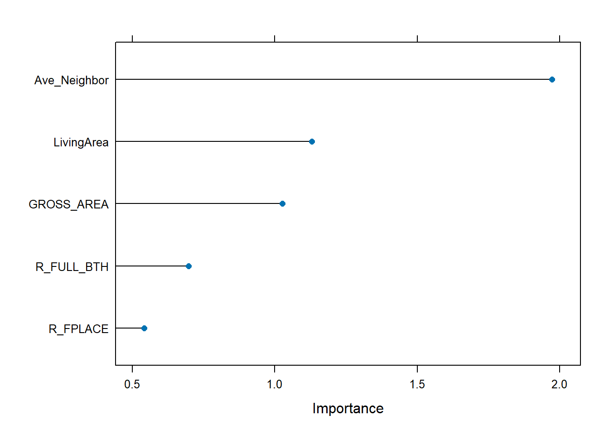
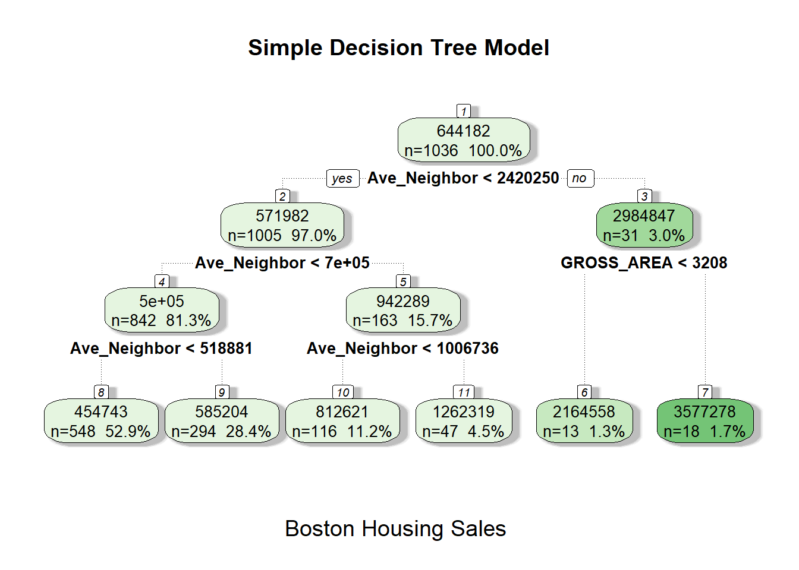
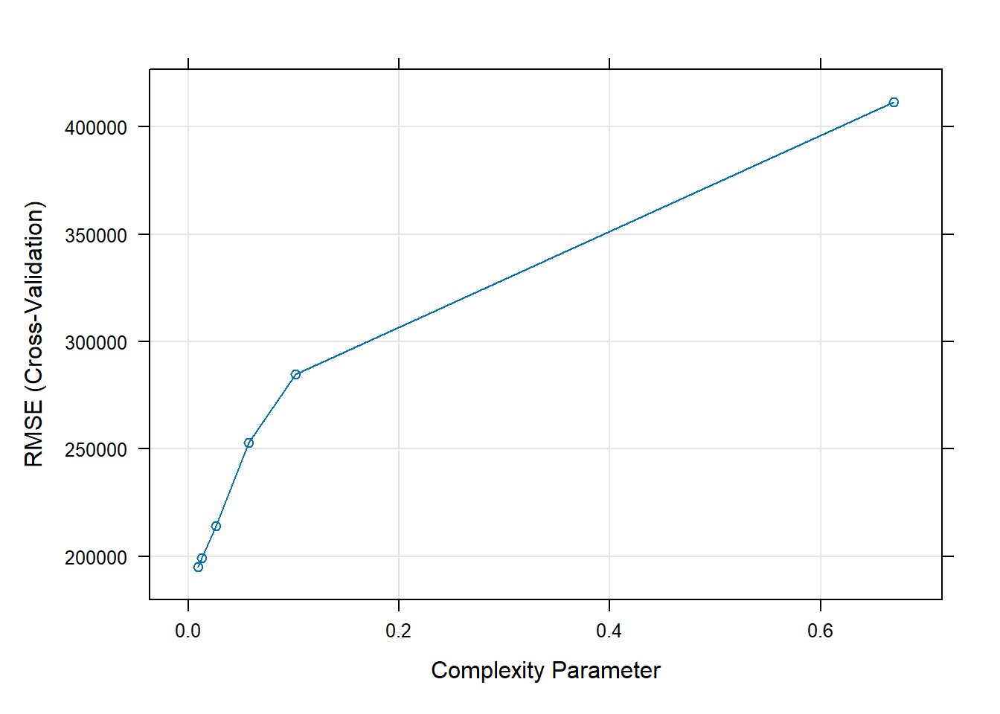
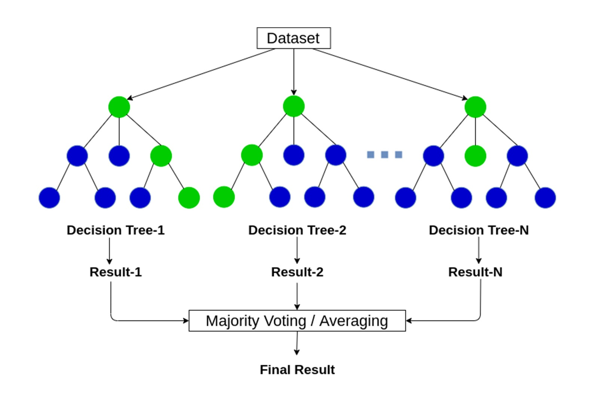
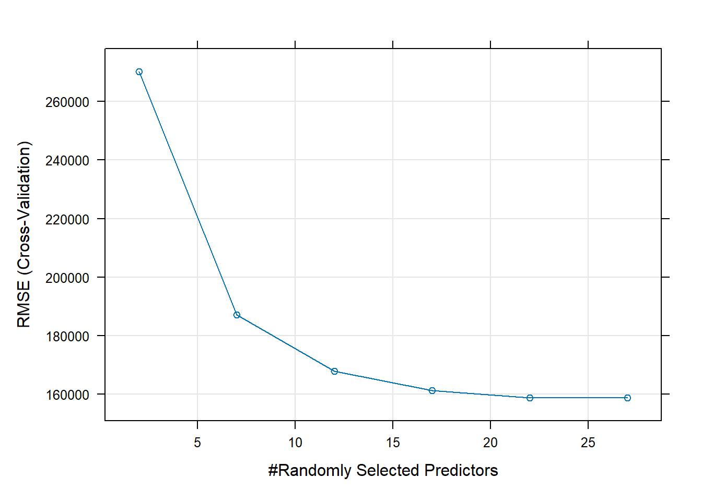
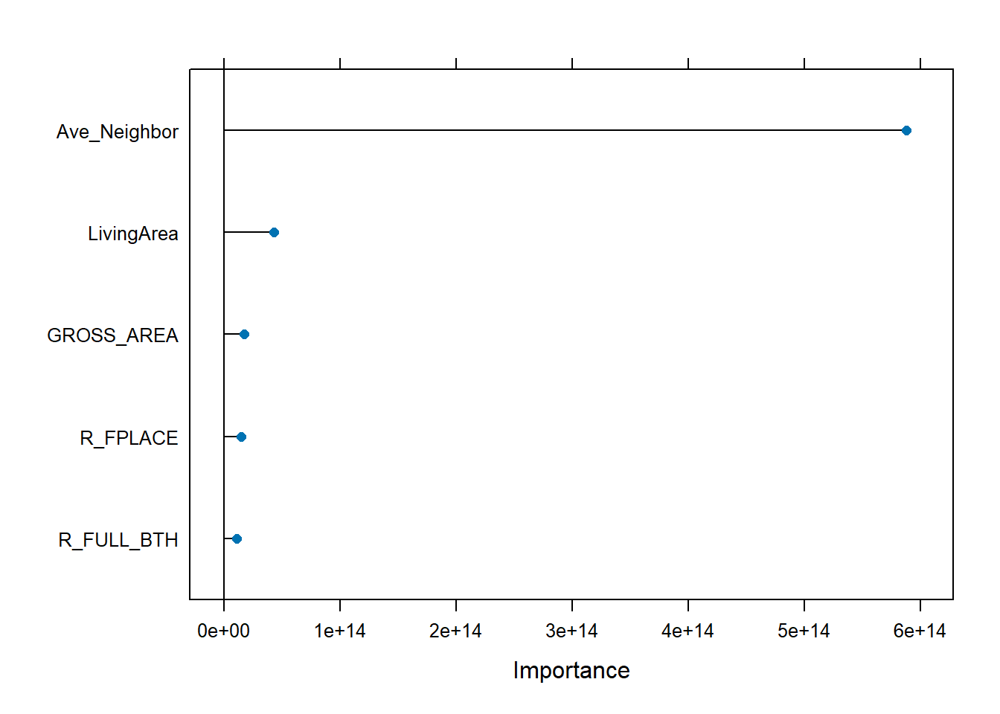

library(tidyverse)
library(sf)
library(caret)
library(rattle)
library(gbm)Geospatial Machine Learning with 
11.118/11.218 Applied Data Science for Cities
Introduction
Last week, we saw how machine learning can be used for prediction, and that different models vary in their predictive accuracy. More flexible models, like random forests, tend to capture complex patterns better. This week, we’ll take a closer look at tree-based models, including decision trees, ensembles, and boosting methods. The spatial element is added and we will learn why generalizability across space is so important for geospatial machine learning.
Add Spatial Context to Housing Price Prediction
We’ll continue using the Boston housing price data to explore prediction models.
Last time, we focused on building characteristics, following a typical hedonic model - a model that explains housing prices based on property features like size, age, or number of rooms.
# This part goes to the lecture
boston <- read_csv("../data/boston_house_price_collapse.csv")However, houses exist in space, and housing prices are not randomly distributed. Real estate transactions often show a spatial pattern, where nearby houses tend to have similar prices. This is known as spatial autocorrelation, the idea that “near things are more related than distant things.”
This week, we’ll try including a variable that represents “nearby prices” to see if it increases the variance explained and improves our predictions. In the following code, we create a new variable that captures the average housing price in nearby neighborhoods, an idea known as spatial lag.
Convert the dataset to a spatial feature using its longitude and latitude information:
boston_sf <-
boston |>
st_as_sf(coords = c("Longitude", "Latitude"), crs = 4326) |>
st_transform(2249)For each house, draw a 500-meter buffer, identify all other houses within that buffer, and calculate their average price.
boston_buffer <- st_buffer(boston_sf, dist = 1640) |>
select(Parcel_No, SalePrice)
neighbors <- st_intersection(boston_sf, boston_buffer)
ave_price <- neighbors |>
filter(Parcel_No != Parcel_No.1) |>
group_by(Parcel_No) |>
summarize(Ave_Neighbor = mean(SalePrice.1, na.rm = TRUE)) |>
st_drop_geometry() This average is then joined back to the original dataset as a new variable, giving each house a sense of its local price context.
boston_with_splag <- boston_sf |>
left_join(ave_price, by = "Parcel_No")
boston_with_splag <- boston_with_splag |>
mutate(Ave_Neighbor = case_when(
is.na(Ave_Neighbor) ~ SalePrice,
TRUE ~ Ave_Neighbor
))Fit a Decision Tree Model
Here we repeat the modeling workflow from last time. First identify the variables we want to include. Then handle data issues such as rare categories and outliers. After cleaning the data, we split it into training and test sets to prepare for modeling.
modeldata <- boston_with_splag |>
st_drop_geometry() |>
select(-c(Parcel_No, PricePerSq, LU, R_BLDG_STY)) |>
filter(Style != "Unknown") |>
filter(SalePrice < 5000000)
set.seed(42) # for reproducibility
train_index <- createDataPartition(
y = modeldata$SalePrice,
p = .7,
list = FALSE
)
train_data <- modeldata[ train_index,]
test_data <- modeldata[-train_index,]As we’ve seen with the caret package, we can fit different models by changing the "method" argument in train(). Here, we fit a basic decision tree model by setting method = "rpart".
tree_model <- train(
SalePrice ~ .,
data = train_data,
method = "rpart",
trControl = trainControl("cv", number = 5),
tuneLength = 6
)Calculate the RMSE. Even with a simple decision tree, the prediction got much better than last time’s random forest model, just by adding the spatial lag variable.
pred <- predict(tree_model, newdata = test_data)
tree_result = RMSE(pred, test_data$SalePrice)
tree_result[1] 202977.8Feature Importance
varImp() shows the importance of each variable in a model. In a tree-based model context, variable importance is measured by how much a variable reduces error (e.g., decreases node impurity) when used to split the data.
Our spatial lag variable Ave_Neighbor ranks the highest among the predictors. The importance score is relative, meaning a variable scored 2.0 contributed twice as much a variable with a score of 1.0.
tree_model_importance <- varImp(tree_model, scale = FALSE)
plot(tree_model_importance, top = 5)
Tree structure
A tree model is considered a “white-box” model, because we can easily see the if-then-else rules it uses to make predictions. At each split, the tree decides which variable to use and what value is appropriate for the split. Each path leads to a smaller group that is more homogeneous in terms of housing price.
Each box typically shows three numbers: predicted value, % of total data, and number of observations. For instance, at #2 node, 571,982 is the average of the housing price variable in this group, n=1005 is the number of observations that fall in this group, and 97% means this number of observations takes up 97% of the entire dataset.
fancyRpartPlot(
tree_model$finalModel,
main = "Simple Decision Tree Model",
sub = "Boston Housing Sales",
digits = -3
)
Parameter Tuning
A decision tree can technically keep growing until each leaf is pure (i.e., contains only one class or exact value). However, as the tree grows deeper, its splitting rules become increasingly specific. Initially, the splits capture meaningful patterns in the data, but later ones often reflect only noise. This leads to overfitting. To prevent this, we need to decide when to stop growing the tree.
The tree model includes an internal complexity parameter (cp), which serves as a form of regularization. This parameter adds a penalty for each additional split:
- A higher cp means more restriction (fewer splits, simpler tree).
- A lower cp allows more splits (risking overfitting).
You can specify cp directly in the train() function, or let caret automatically test a range of cp values to find the one that gives the best predictive performance.
In your tree_model results, you’ll see a list of tested cp values. For example, we have set tuneLength = 6, so caret tried 6 different cp values. For each one, it uses 5-fold cross-validation to estimate the performance. After training, it reports: “The final value used for the model was cp = xxx”.
tree_modelCART
1036 samples
14 predictor
No pre-processing
Resampling: Cross-Validated (5 fold)
Summary of sample sizes: 829, 828, 830, 829, 828
Resampling results across tuning parameters:
cp RMSE Rsquared MAE
0.00943124 194878.8 0.8465393 130397.0
0.01244752 199303.3 0.8374178 134003.3
0.02585317 214115.0 0.8109520 143219.5
0.05757983 252965.7 0.7548125 153943.8
0.10196885 284744.4 0.6644264 178483.1
0.66917205 411661.0 0.5775574 226671.5
RMSE was used to select the optimal model using the smallest value.
The final value used for the model was cp = 0.00943124.The plot(tree_model) displays the model performance (e.g., RMSE) for each tested value of cp.
plot(tree_model)
From One Tree to a Forest
In 1906, statistician Francis Galton observed a contest to guess an ox’s weight. There were 800 guesses, and while the individual guesses varied widely, the average was within 1% of the true weight. This “wisdom of crowds” idea, explored by James Surowiecki, also applies to predictive models: combining multiple models (an ensemble) is often more accurate than relying on just one.
Random forest is an ensemble model made up of many decision trees. Each tree makes its own prediction, and the final result is based on averaging (for regression) or majority vote (for classification). The randomness both in selecting data and variables helps reduce overfitting and improves the model’s ability to generalize to new data.

set.seed(42)
rf_model <- train(
SalePrice ~ .,
data = train_data,
method = "rf",
trControl = trainControl("cv", number = 5),
tuneLength = 6
)
pred <- predict(rf_model, newdata = test_data)
rf_result <- RMSE(pred, test_data$SalePrice)
rf_result[1] 143326.3With the spatial variable, this random forest model produce better result (RMSE 143,326.3) compared with last week (RMSE ~234,360).
How was the forest formed?
Random forest is built through two stages of random sampling. Each tree is trained on a random subset of the data, and at each split, each tree randomly selects a subset of predictors to consider. This added variation across trees mimics the wisdom of crowds: each tree sees a different part of the data and contributes its own “opinion,” leading to more stable and generalizable predictions.
How many trees are there in a forest
In the caret package, the number of trees in a random forest is controlled by the ntree parameter. You can pass it through the train() function. The default value is 500.
train(
...
ntree = 500
)How many predictors each tree uses
mtry controls how many predictors are randomly selected and considered at each split in a tree. The random forest model in caret automatically tunes the mtry hyperparameter, meaning the model tests different values to see which one gives the best predictive performance.
In your model result below (rf_model), mtry shows the number of predictors randomly selected at each split of a tree. It tested 6 mtry values, because we have specified tuneLength = 6 in the train() function. After the 6 attempts, the the model says “The final value used for the model was mtry = 27.”
rf_modelRandom Forest
1036 samples
14 predictor
No pre-processing
Resampling: Cross-Validated (5 fold)
Summary of sample sizes: 828, 828, 829, 831, 828
Resampling results across tuning parameters:
mtry RMSE Rsquared MAE
2 270273.4 0.7978104 150634.58
7 187092.3 0.8770591 106331.33
12 167880.8 0.8913759 100677.57
17 161211.3 0.8981539 99603.43
22 158843.8 0.8978341 99384.06
27 158736.9 0.8963383 99674.57
RMSE was used to select the optimal model using the smallest value.
The final value used for the model was mtry = 27.The plot(rf_model) displays the model performance (e.g., RMSE) for each tested value of mtry.
plot(rf_model)
Hyperparameter tuning
Now we begin to see that machine learning models come with hyperparameters. Models learn patterns from data, they can behave differently depending on how they’re set up. A model can give you a random guess (underfitting)or try to accurately fit every single point (overfitting). What we want is a balance: a model that captures the real underlying patterns, but not the noise.
Hyperparameters are the “knobs” we use to tune that balance between accuracy and generalizability. Unlike parameters that are learned from the data (like coefficients in linear regression), hyperparameters are set by the users or selected through tuning (like cp in a decision tree, or mtry in a random forest).
If you’re not satisfied with the default values that the model tries, or if you want to test specific values (such 2, 4, 6, 8), you can manually tune them by specifying a tuning grid using the tuneGrid argument in the train() function:
# Fit the model with your custom grid
rf_model <- train(
...
tuneGrid = expand.grid(mtry = c(2, 4, 6, 8)),
)Two Ensemble Learning Methods
Bagging
We mentioned each decision tree is trained on a different subset of the training data. This process is called bagging, short for bootstrap aggregating. It works by randomly sampling the original training data with replacement, meaning the same observation can be selected multiple times.
The statistical term bootstrapping comes from the phrase “to pull oneself up by one’s bootstraps”, reflecting the idea that we generate many new datasets by resampling from the original data, without needing new data.
Boosting
While bagging builds many trees in parallel, boosting builds trees sequentially, where each new tree is trained to correct the mistakes made by the previous one. Both bagging and boosting are ensemble methods, they aggregate the outputs of multiple models, just in different ways
In boosting, the idea is to focus learning on the “hard” cases. The first tree might make many mistakes, and the second tree then tries to fix those mistakes by giving more weight to the misclassified or poorly predicted observations. This process continues, with each tree trained to minimize the residual error from the combined model so far.
Fit A Boosted Tree
One of the most commonly used boosting algorithms is the Gradient Boosted Machine (GBM). GBM builds trees one at a time and each new tree is trained to predict the residuals (i.e., the remaining errors) from the current ensemble of trees.

Use the method = "gbm" for a Gradient Boosted Machine model:
set.seed(42)
gbm_model <- train(
SalePrice ~ .,
data = train_data,
method = "gbm",
trControl = trainControl("cv", number = 5),
tuneLength = 3,
verbose = FALSE
)
pred <- predict(gbm_model, newdata = test_data)
gbm_result <- RMSE(pred, test_data$SalePrice)
gbm_result[1] 142774.8GBM Hyperparameters
This table shows all the models available in train(), along with their tunable parameters. For example, you can look up rpart and see that its tuning parameter is cp, and for rf (random forest), it’s mtry.
If you scroll down to gbm (boosted tree model), you’ll notice it has four tuning parameters.
What are they
- n.trees: the number of trees in the (sequenced) ensemble (typical number: 50-500)
- interaction.depth: the maximum depth of each individual tree (usually start with 1-5)
- shrinkage: learning rate. how much each tree contributes to the final prediction. smaller value means slow learning. (Typical values: 0.01, 0.05, 0.1)
- n.minobsinnode: Minimum observations in terminal nodes. how small the leaf nodes (terminal nodes) can be. If this subpartition is trival, then stop it. Higher: less complicated trees. (Typical values: 10)
With more tuning knobs, it mean GBMs are prone to overfitting. It’s tempting to adjust to fit the training data very well. If it fits the training data too well, it loses generalbility
How to tune
1.Let the model choose (automatic tuning): We mentioned we can set up tuneLength in the train function. In the previous example, we have set tuneLength = 3, the model automatically selected 3 values for each of the most influential parameter.
In our case, both n.trees (number of trees) and interaction.depth (tree depth) were varied, each with 3 values. This led to a total of 3 × 3 = 9 combinations, which you can see in the result table.
gbm_model$results shrinkage interaction.depth n.minobsinnode n.trees RMSE Rsquared
1 0.1 1 10 50 219364.0 0.8420349
4 0.1 2 10 50 202008.2 0.8568887
7 0.1 3 10 50 193100.0 0.8633882
2 0.1 1 10 100 207917.4 0.8522571
5 0.1 2 10 100 188575.1 0.8659353
8 0.1 3 10 100 186397.0 0.8691328
3 0.1 1 10 150 203157.6 0.8555506
6 0.1 2 10 150 182642.5 0.8719976
9 0.1 3 10 150 183749.3 0.8717811
MAE RMSESD RsquaredSD MAESD
1 123631.8 21014.13 0.07218021 6894.726
4 113605.3 18676.79 0.05863182 3698.699
7 108567.7 22721.83 0.05961338 2748.247
2 117687.1 22009.86 0.06230836 4904.312
5 110150.1 15023.60 0.05295433 2653.846
8 106545.5 19020.91 0.05349108 3606.791
3 117843.7 17405.58 0.05745362 3946.568
6 108353.7 16029.87 0.04942192 4009.147
9 106603.3 14395.91 0.04824818 3646.3242.Manual tuning (full control): If you want more control, you can manually define the grid of values using tuneGrid = expand.grid(...) . The model will then try all possible combinations of the values you provide.
In the following code, I set up a grid where I will use a deeper tree (interaction.depth), and test it against 2 values of total number of trees (n.trees). This custom tuning improved our test RMSE.
gbm_Grid <- expand.grid(n.trees = c(50, 100),
interaction.depth = 5,
shrinkage = 0.1,
n.minobsinnode = 10)set.seed(42)
gbm_model_tuned <- train(
SalePrice ~ .,
data = train_data,
method = "gbm",
trControl = trainControl("cv", number = 5),
tuneGrid = gbm_Grid,
verbose = FALSE
)
pred <- predict(gbm_model_tuned, newdata = test_data)
gbm_tuned_result <- RMSE(pred, test_data$SalePrice)
gbm_tuned_result[1] 140898.6Again, we can see all the value combinations that the model used.
gbm_model_tuned$results shrinkage interaction.depth n.minobsinnode n.trees RMSE Rsquared
1 0.1 5 10 50 194408.7 0.8634318
2 0.1 5 10 100 186034.2 0.8668271
MAE RMSESD RsquaredSD MAESD
1 109854.7 21113.45 0.05437980 4906.340
2 107333.1 15643.44 0.04977026 4106.315However, trying too many combinations isn’t always necessary or helpful. Different models vary in how sensitive they are to tuning. Sometimes, it’s perfectly fine to stop at a solution that is “good enough”, especially when speed and simplicity matters.
GBM Feature Importance
We can also plot the variable importance of the GBM model using varImp(). The spatial lag variable still ranks among the most important predictors.
gbm_model_importance <- varImp(gbm_model_tuned, scale = FALSE)
# We can also visualize the most important features in our model this way...
plot(gbm_model_importance, top = 5)
Model Summary
Here are the models we’ve tried today. Model complexity, when properly regularized and tuned, can lead to better predictive performance. But it’s equally important to understand how these models actually work, so we can choose and apply them with purpose.
| Model Type | RMSE |
|---|---|
| Decision Tree | 202,977.8 |
| Random Forest | 143,326.3 |
| Gradient Boosted Machine | 142,774.8 |
| Gradient Boosted Machine (with tuning) | 140,898.6 |
Lab Report
For this homework, continue working with the Ames Housing dataset and improve the best model you built previously by adding spatial contexts and apply tree-based models.
- First, include a variable related to location information in your dataset. This could be a spatial lag variable, or a categorical neighborhood variable (as in Steif’s book chapter).
- Then, apply both Random Forest and Gradient Boosted Tree models, adjusting a few key tuning parameters using either
tuneLengthor a customtuneGrid. Try different settings to find the model that performs best based on test RMSE.
What is the best model you’ve built after exploring different machine learning methods over the past two weeks? Take some time to reflect on your work and prepare a report sharing your findings.
In your report, tell us which model performed best based on test RMSE and explain why you think it stood out. Describe the different models you tried, what you liked or didn’t like about them, and any adjustments you made along the way like tuning parameters, selecting features, or creating variables. Please include any helpful tables or graphs that show your results, such as comparisons of RMSE values or visualizations that illustrate your model’s performance.
Keep your report clear and straightforward so anyone reading it can easily follow your process and reasoning. We’re excited to see what you discovered!
Please prepare your report in a Quarto document and submit your Rendered HTML file to Canvas by the end of day, Tuesday, Sep 23.